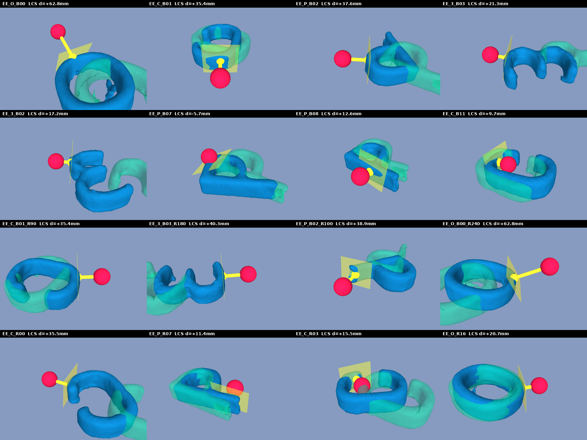
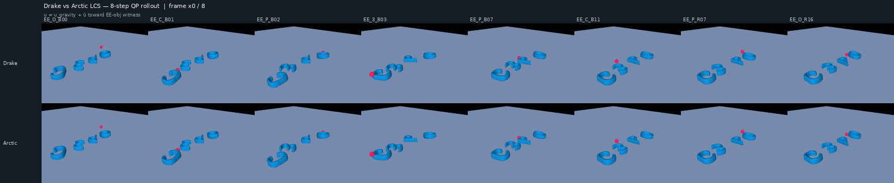
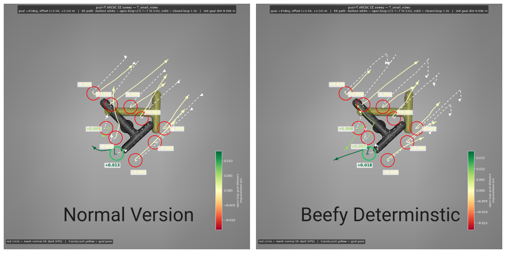
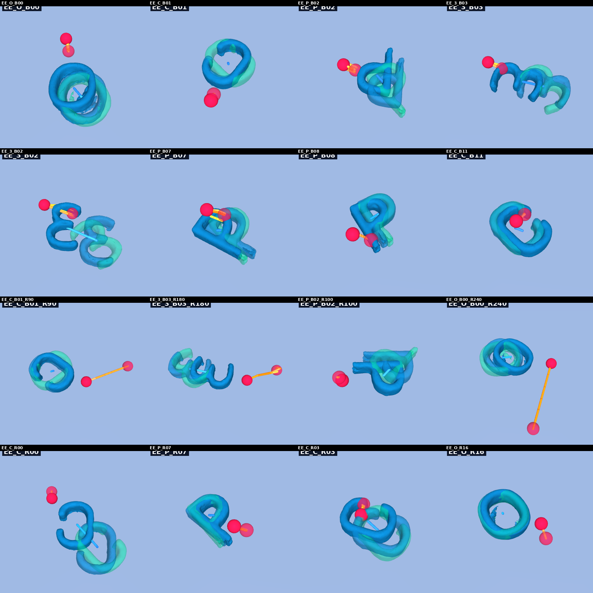
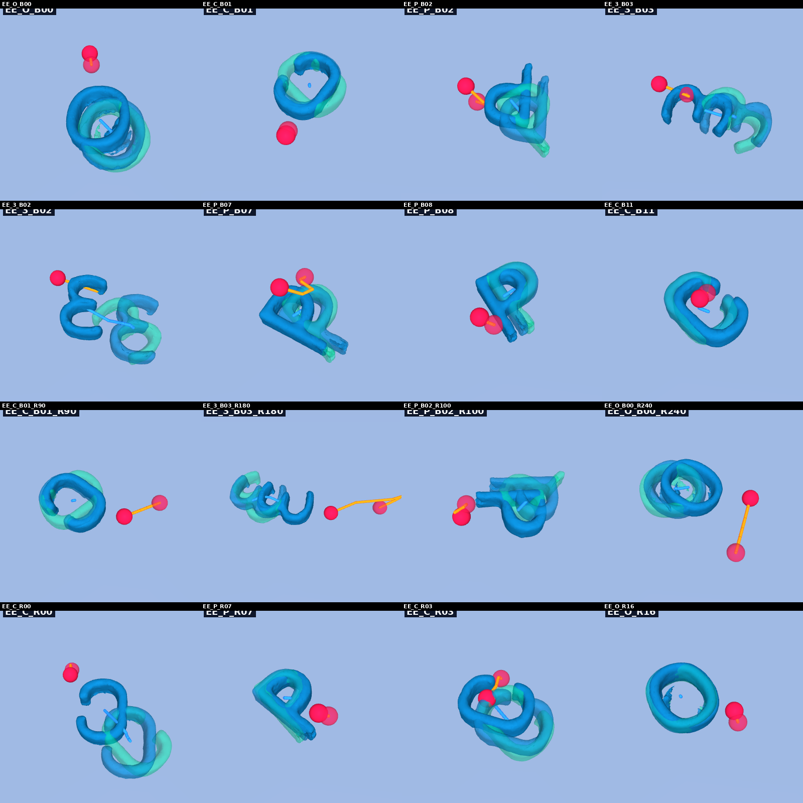

2026 July 1
First off, I am pretty confident that my LCS is good. Here is an image of the contact linearizations that are chosen during LCS creation for push anything:

Similarly, here are some rollouts going throught the LCS (compared to drake):

As you can, see the LCS seems to be good. Note that it definitely doesn’t match the drake LCS exactly as the collision detection is a bit different and drake does the 1 kg thing (I wonder if that is actually something to give more thought to).
The “insight” (in scare quotes) that I had this week was that C3 kind of required the PD controller to work effectively. Here is a video that demonstrates what I am talking about:
I then implemented a PD controller for my robust method—around the mean end effector x trajectory—and did some hyperparameter tuning. Specifically, I hyperparameter tuned a beefed up super-version of my method and the normal version, and included the PD gains as hyperparameters. Here is a video of the closed loop rollouts on the tuning cases for both versions:
Note: The optuna costs evaluated between the video above and the C3 pd video are different, and thus not comparable. They are, however, comparable within a video.
Here is the push “T” visualization:

As you can see, there is a bit of a difference, but overall they both do okay. Not amazing, but perhaps servicable. There is some wobbly/instability in certain cases, and notably, there is still the “EE flies away” problem on the opposite side of the “T”.
Takeaway: Because both hyperparameters were comparable enough, I don’t think the problem is just the number of iterations or a slight boost in numerical accuracy. I think there must be something else going on.
One problem might be that the MPC finds pretty infeasible
trajectories in its solution. For example, here is a visualization
of the sol.x in the beefed up version:
Here is a static image of the x solution for both sets of hyperparameters:


Clearly, complementarity is not exact. Here is a visual of how it progresses through the ADMM algorithm:
Note: perhaps this throws everything into question, but there is definitely a bug as the last frame for each case in the above mp4 does not match the png above. I am currently in the process of debugging this.